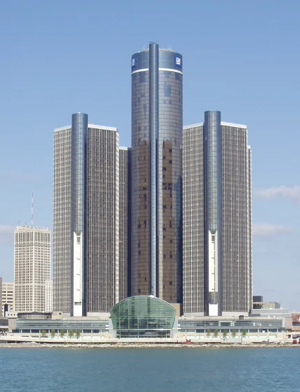
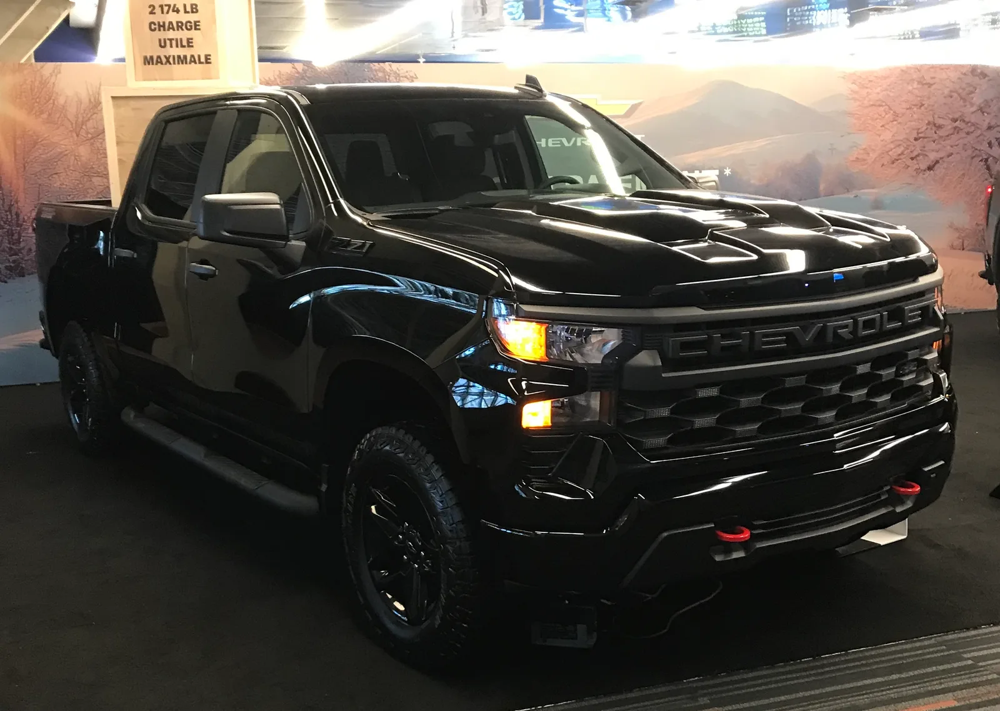

▲ 9월 18일 뉴욕 증시에서 스텔란티스와 GM 주가가 개별 악재 없이 나란히 4% 빠졌다 ⓒ Wikimedia Commons
목요일에 오른 만큼, 금요일에 그대로 빠졌다. 2026년 9월 18일 뉴욕 증시에서 스텔란티스(STLA)와 제너럴모터스(GM) 주가가 각각 4%씩 동반 급락했다. 포드(F)도 2% 내리며 같은 흐름에 동참했다. 그런데 이 하락에는 이렇다 할 이유가 없었다. 실적 발표도, 리콜도, 경영진 발언도 없었다. 24/7 Wall St는 이를 "회사별 공시나 실적 변화 없이" 벌어진 순수한 되돌림 매매라고 짚었다.
바로 전날인 9월 17일, 같은 세 종목은 반대 방향으로 나란히 뛰었다. GM과 스텔란티스가 각각 4%, 포드가 3%, 심지어 테슬라까지 2% 오른 날이었다. 하루 만에 오른 만큼 되돌아간 셈이다. 이 널뛰기의 배경에 있는 '로테이션 트레이드'가 무엇인지, 그리고 그 아래 깔린 스텔란티스·GM의 실제 펀더멘털은 어떻게 다른지 살펴봤다.
1. 무슨 일이 있었나 — 목요일 상승, 금요일 반납
9월 17일 목요일, 자동차 3사 주가는 일제히 뛰었다. 24/7 Wall St에 따르면 이날 GM은 4%, 스텔란티스는 4%, 포드는 3% 상승했고, 전기차 업체 테슬라도 2% 올랐다. 서로 업종도, 재무 구조도, 시가총액도 전혀 다른 네 종목이 비슷한 폭으로 같은 날 오른 것 자체가 개별 기업 소식이 아니라 자금 흐름 차원의 이동이 있었다는 신호였다.
문제는 바로 다음 날이었다. 9월 18일 금요일, 전날 오른 세 종목이 정확히 반대 방향으로 움직였다. 스텔란티스는 4% 하락해 4.86달러, GM은 4% 하락해 83.21달러, 포드는 2% 하락해 13.28달러를 기록했다. 세 종목 모두 소비재 선택 섹터 ETF인 XLY(-0.6%)보다, XLY는 다시 S&P500 지수(SPY, -0.2%)보다 가파르게 떨어지며, 전날 쌓아 올린 상승분을 같은 순서·같은 상대 속도로 그대로 반납했다.
| 종목 | 9월 17일(목) | 9월 18일(금) |
|---|---|---|
| 스텔란티스(STLA) | +4% | -4% (4.86달러) |
| GM | +4% | -4% (83.21달러) |
| 포드(F) | +3% | -2% (13.28달러) |
| 테슬라(TSLA) | +2% | - |
📍 회사별 뉴스는 "제로(zero)"
24/7 Wall St는 금요일 하락을 두고 "zero company-specific news attached(회사별 개별 뉴스는 전혀 없었다)"는 표현을 그대로 썼다. 리콜, 실적 수정, 경영진 발언, 신차 발표 등 통상 주가를 흔드는 재료가 아무것도 없었다는 뜻이다. 원인은 순전히 카테고리 단위의 자금 이동, 즉 로테이션 트레이드가 하루 만에 방향을 튼 데 있었다.
2. '로테이션 트레이드'란 무엇인가 — 회사가 아니라 라벨을 사고판다
로테이션 트레이드는 투자자들이 개별 종목이 아니라 '섹터'나 '카테고리' 단위로 자금을 옮기는 매매를 말한다. 성장주에서 가치주로, 기술주에서 경기순환주로 자금이 통째로 이동하는 식이다. 이번 사례에서는 금리 인하 기대와 소비자 심리 개선이라는 거시 환경 변화에 힘입어, 신용구매 비중이 높은 자동차 업종이 통째로 '경기순환주' 라벨로 묶여 매수세를 받았다.
24/7 Wall St는 이 매매의 핵심 특징을 이렇게 짚었다. "카테고리 수준의 자금 흐름은 운영 실적과 무관하게 회사를 매수한다(Category-level flow buys the label rather than the operator)"는 것이다. 즉 로테이션 매수세는 실적이 탄탄한 회사와 부실한 회사를 구분하지 않고 똑같이 끌어올린다. 스텔란티스처럼 매출이 41% 줄어든 회사도, GM처럼 애널리스트들이 저평가로 보는 회사도 목요일 하루는 똑같이 4% 올랐다.
✅ 로테이션 트레이드의 3가지 특징
· 무분별성 — 종목의 실행력·펀더멘털과 무관하게 카테고리 전체가 함께 움직인다
· 일시성 — 트레이드를 만든 재료(이 경우 거시 기대감)가 새 뉴스로 뒷받침되지 않으면 곧바로 역방향으로 되돌아간다
· 배율 효과 — 카테고리에 속한 종목일수록 벤치마크 지수보다 상승·하락 폭이 더 크게 나타난다(이번엔 자동차주가 XLY보다, XLY가 다시 SPY보다 더 크게 움직였다)

▲ GM 본사가 있는 디트로이트 르네상스 센터 — GM은 이번 로테이션 되돌림에서 스텔란티스와 같은 낙폭을 보였지만 펀더멘털은 다르다는 평가를 받는다 ⓒ Wikimedia Commons
24/7 Wall St의 원문 보도에서 이날 하락 상황을 직접 확인할 수 있다. 24/7 Wall St 원문 기사 바로가기
3. 같은 4%, 다른 처지 — 스텔란티스와 GM의 온도차
같은 날 같은 폭으로 떨어졌다고 해서 두 회사의 상황이 같은 것은 아니다. 24/7 Wall St는 스텔란티스에 대해 "이 문제들은 로테이션 트레이드 하나가 고치지도, 악화시키지도 않는 문제(problems one rotation trade neither fixes nor worsens)"라고 못박았다.
| 구분 | 스텔란티스(STLA) | GM |
|---|---|---|
| 연초 대비 주가 | -55% | 12개월 총주주수익률 +51% |
| 매출 증감 | 2분기 전년비 -41% | 1분기 조정 EPS 3.70달러(예상 2.62달러 상회) |
| 영업마진 | 약 1.8~2% | 수익성 개선 흐름 지속 |
| 밸류에이션 | 2026년 예상 실적 대비 약 6.5배, 목표주가 7.87달러(현재가 대비 상당한 괴리) | 애널리스트 평균 목표주가 약 100달러(당시 주가 대비 약 20% 상회), 컨센서스 '매수' |
| 다음 이벤트 | 2026년 10월 28일 3분기 실적 발표 | 추가 실적 가이던스 상향 여부 주목 |
📍 스텔란티스, 다운그레이드와 노동 리스크까지 겹쳐
스텔란티스는 로테이션 되돌림 전후로 악재가 더 쌓였다. 베렌버그(Berenberg)는 투자의견을 매수에서 보유로 낮추고 목표주가를 7.80유로에서 5.10유로로, 모건스탠리는 5.70유로에서 4.50유로로 각각 하향했다. 여기에 캐나다 온타리오 브램턴(Brampton) 조립공장의 폐쇄·매각 여부를 둘러싼 노동조합 유니포(Unifor)와의 단체교섭이 교착 상태(impasse)에 빠졌다고 선언되면서 투자심리가 추가로 악화됐다. 임금이 아니라 브램턴 공장의 존폐 자체가 쟁점으로, 스텔란티스가 이 공장을 방산업체 로셸(Roshel)에 매각하는 방안을 검토 중이라는 사실이 알려지며 갈등이 커졌다. 주가는 8월 말 5.49달러에서 9월 22일 4.83달러까지 한 달 새 다시 12%가량 더 빠진 상태였다.
📍 GM은 '저평가' 논쟁의 반대편에 있다
GM은 정반대의 평가를 받는다. 1분기 조정 주당순이익이 시장 예상치 2.62달러를 크게 웃도는 3.70달러를 기록했고, 소프트웨어·구독 서비스 매출이 늘며 마진 구조가 개선되는 신호가 나왔다. S&P Global 집계 기준 애널리스트 28명의 컨센서스는 '매수'이며, 평균 목표주가는 약 100달러로 최근 79달러 수준에서 크게 상향됐다. 즉 GM의 4% 하락은 펀더멘털 악화가 아니라 순수하게 로테이션 자금이 빠져나간 결과에 가깝다는 것이 시장의 대체적인 해석이다.
4. 이번 급락은 필로사 CEO의 EV 전략 재조정과 같은 이야기인가
결론부터 말하면, 이번 4% 급락은 지난 9월 10일 필로사(Antonio Filosa) CEO가 Jefferies 컨퍼런스에서 밝힌 EV 전략 재조정과는 별개의 이벤트다. 다만 두 사건은 서로 다른 시간축에서 같은 결론, 즉 "스텔란티스는 구조적으로 저평가돼 있지만 그 저평가에는 이유가 있다"는 점을 가리킨다.
✅ 두 사건의 성격 차이
· 필로사 CEO의 EV 전략 재조정(9월 10일) — 2025년 순손실 223억 유로(약 263억 달러)와 254억 유로(약 300억 달러) 규모 손상차손을 배경으로 한 회사 고유의 경영 전략 발표. 2030년 유럽 100%·미국 50% EV 목표를 철회하고 멀티에너지 전략으로 전환한다는 내용
· 9월 18일 4% 급락 — 회사 발표나 실적 변화 없이 순수 자금 흐름(로테이션 트레이드)의 되돌림으로 발생한 단기 주가 이벤트
· 공통점 — 두 사건 모두 스텔란티스의 밸류에이션이 왜 낮게 형성돼 있는지를 보여주는 배경. 연초 대비 55% 하락, 매출 41% 감소, 영업마진 2%라는 숫자는 EV 전략 재조정이 반영된 결과이자, 이번 로테이션 트레이드가 '해결하지도 악화시키지도 못하는' 구조적 문제이기도 하다
바꿔 말하면, 필로사 CEO의 발언이 스텔란티스 주가가 왜 이렇게까지 눌려 있는지에 대한 '근본 원인'을 설명한다면, 9월 18일의 급락은 그 눌려 있는 주가가 하루짜리 로테이션 매수세로 반짝 반등했다가 다시 제자리로 돌아온 '증상'에 가깝다. 로테이션 트레이드는 회사의 펀더멘털을 하루 만에 바꾸지 못하며, 스텔란티스가 안고 있는 매출 감소·저마진 문제는 10월 28일 3분기 실적 발표에서야 실질적으로 판가름 날 전망이다.
5. 포드는 어디에 있었나 — 상대적으로 덜 흔들린 이유
세 회사 중 포드의 낙폭이 가장 작았다. 목요일 상승 폭도 3%로 GM·스텔란티스(각 4%)보다 낮았고, 금요일 하락 폭도 2%로 절반 수준이었다. 절대적으로 보면 포드도 로테이션 트레이드의 되돌림에서 자유롭지 못했지만, 상승과 하락 모두에서 진폭이 더 작았다는 점이 눈에 띈다.
📍 포드도 EV 속도조절 중이지만, 손실 규모는 상대적으로 관리되는 편
포드 역시 2025년 12월 3열 전기 SUV와 차세대 전기 픽업 계획을 취소하고 하이브리드 라인업을 확대하는 방향으로 돌아섰으며, 이 과정에서 총 195억 달러 규모의 손실을 반영했다. 다만 이 중 55억 달러는 2027년으로 이월 처리되는 등 손실을 분산 인식하고 있어, 스텔란티스처럼 단일 회계연도에 300억 달러에 육박하는 손상차손을 한꺼번에 떠안은 경우와는 충격의 집중도가 다르다. 이런 배경이 이번 로테이션 국면에서 포드의 상대적으로 낮은 변동성으로 이어졌을 가능성이 있다.
▲ 스텔란티스 산하 지프는 내연·하이브리드 라인업 비중이 큰 브랜드로, 이번 로테이션 되돌림과 별개로 EV 전략 재조정의 영향을 받고 있다 ⓒ Wikimedia Commons
6. 애널리스트들의 시선 — 밸류에이션은 갈리지만 "단기 소음"이라는 공감대
애널리스트들 사이에서도 스텔란티스와 GM의 앞날을 보는 시각은 갈린다. 그러나 이번 로테이션발 급락 자체를 회사 펀더멘털의 근본 변화로 해석하는 시각은 찾아보기 어렵다.
✅ 회사별 밸류에이션 논쟁 정리
· 스텔란티스 — 2026년 예상 실적 대비 주가수익비율(PER)이 약 6.5배로 낮은 편이며, 일부 분석은 6.69달러의 공정가치를 제시해 현재가 대비 약 38.5% 상승 여력이 있다고 본다. 다만 이는 "실적이 반등한다는 전제"가 성립할 때의 이야기이며, 2분기 EPS가 예상치 0.25달러 대비 0.14달러로 45%가량 미달한 전례가 있어 10월 28일 3분기 실적이 분수령이 될 전망이다
· GM — 애널리스트 28명 컨센서스 '매수', 평균 목표주가 약 100달러. 소프트웨어·구독 매출 확대를 근거로 한 자산 가치 재평가론(최대 37~40% 저평가 주장)도 나온다
· 공통 진단 — 두 회사 모두 "로테이션 트레이드가 만든 하루짜리 변동성과, 분기 실적이 증명해야 할 구조적 펀더멘털은 다른 문제"라는 데는 큰 이견이 없다

▲ GM의 실적을 떠받치는 쉐보레 실버라도 등 픽업트럭 라인업 — 애널리스트들은 GM을 스텔란티스와 달리 '저평가' 쪽에 무게를 두고 있다 ⓒ Wikimedia Commons
스텔란티스의 10월 실적 발표를 앞둔 밸류에이션 분석은 아래에서 확인할 수 있다. 스텔란티스 10월 실적 전망 관련 보도 바로가기
7. 요약
2026년 9월 18일, 스텔란티스와 GM 주가는 회사별 뉴스 없이 각각 4%씩 동반 급락했다. 바로 전날인 9월 17일 두 종목을 포함한 자동차주 전반이 경기순환주 로테이션 매수세로 4% 안팎 동반 상승했던 것이 하루 만에 그대로 되돌려진 결과다. 포드는 상승·하락 폭 모두 상대적으로 작아 로테이션의 충격을 덜 받았다.
같은 4% 하락이지만 두 회사의 처지는 다르다. 스텔란티스는 연초 대비 55% 하락, 매출 41% 감소, 영업마진 2%라는 구조적 문제를 안고 있는 반면, GM은 애널리스트 컨센서스 '매수'와 목표주가 상향이 이어지는 저평가 논쟁의 대상이다. 이는 9월 10일 필로사 CEO가 밝힌 EV 전략 재조정과는 별개의 사건이지만, 스텔란티스 주가가 왜 이렇게 눌려 있는지를 같은 맥락에서 보여준다.
관건은 10월 28일 스텔란티스 3분기 실적이다. 로테이션 트레이드는 회사 펀더멘털을 하루 만에 바꾸지 못한다는 것이 이번 사례의 교훈이며, 매출·마진이 실제로 반등하는지가 밸류에이션 괴리를 좁힐 유일한 열쇠로 남아 있다.